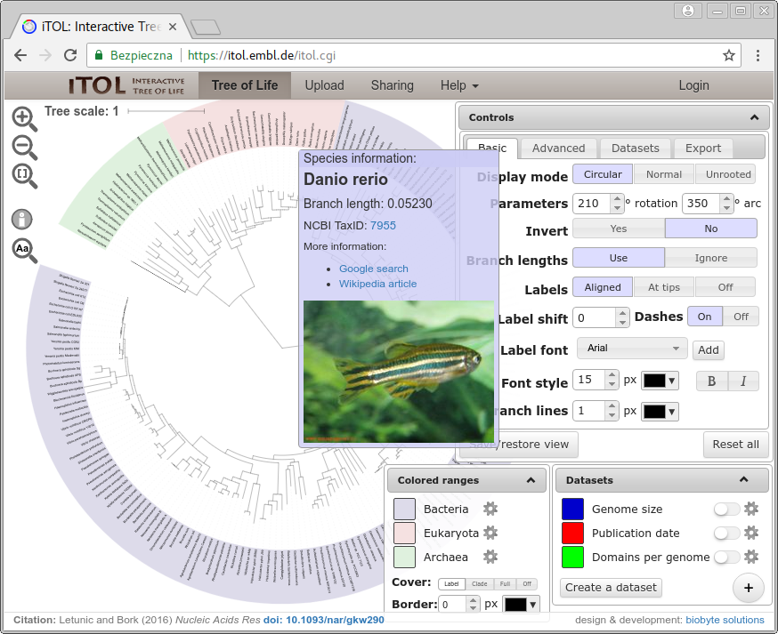
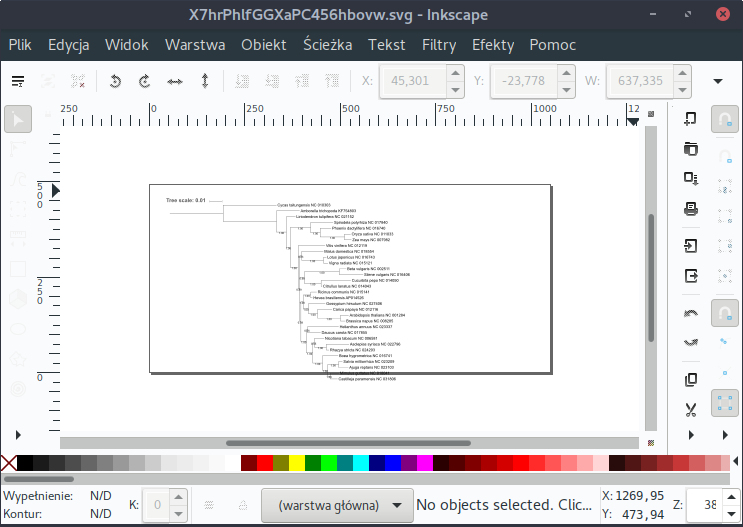
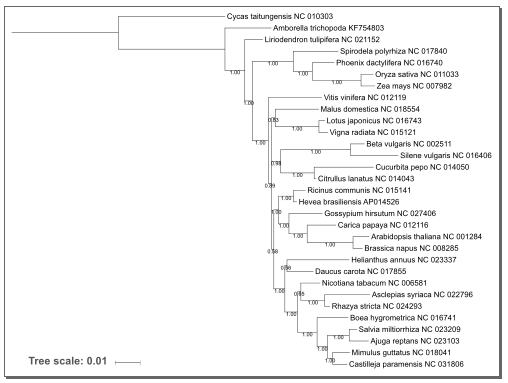
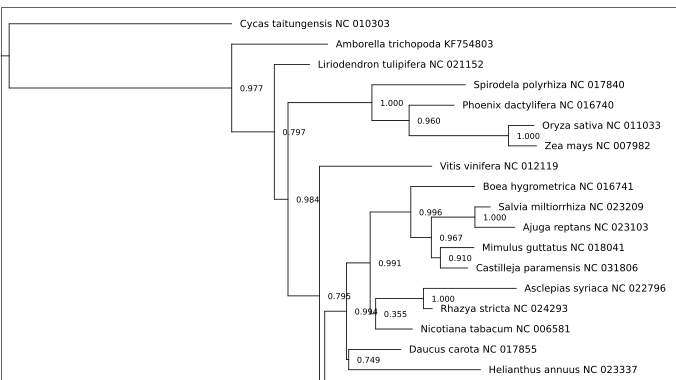

Wizualizacja drzew filogenetycznych
Uwagi ogólne
Wygenerowane drzewa należy odpowiednio zwizualizować, tak aby w czytelny sposób pokazały wyniki badań. Poniżej krótko scharakteryzuję kilka wybranych (subiektywnie) programów, o różnych możliwościach i sposobie użytkowania, które można wykorzystać w tym celu. Nieco dłużej zatrzymam się na dostępnym przez przeglądarce narzędziu iTOL. Warto jednak samemu sprawdzić dokładniej dostępne opcje i możliwości każdego z nich.
Szerszą listę można znaleźć np. na Wikipedii.
Etapy wizualizacji drzew
Każdy program generuje dendrogram w formie domyślnej, która rzadko odpowiada temu co chcemy osiągnąć. Zwykle zatem dopasowujemy wygląd drzewa posługując się funkcjami oferowanymi przez program. Do najczęściej stosowanych modyfikacji należą:
- wybór typu drzewa (filogram, dendrogram)
- wybór wyglądu drzewa (prostokątny, trójkątny, kołowy, radialny...)
- dopasowanie wyświetlanych wartości i ich formatu (boostrap, prawdopodobieństwo aposteriori, długość gałęzi...)
- ukorzenianie drzewa
- obracanie gałęzi
- łączenie gałęzi (np. poniżej określonej wartości bootstrap)
- ustalenie wielkości i proporcji drzewa (wysokość i szerokość)
- umieszczenie nazw liści na końcach gałęzi lub wyrównanie ich w kolumnie
- korekta nazw liści
- dopasowanie innych aspektów wizualnych (wielkość i rodzaj czcionki, grubość i kolor gałęzi...)
- zaznaczanie kladów i innych części drzew
Programy do wizualizacji drzew w różnym stopniu pozwalają na wykonanie powyższych czynności, zatem dobór programu zależy m. in. od tego w jakim stopniu drzewo zamierzamy modyfikować. Często chcemy jeszcze dokonać dodatkowej edycji drzewa w sposób, który nie jest możliwy z poziomu używanego programu albo na przykład ułożyć kilka drzew w postaci jednej ilustracji. W takim przypadku warto zapisać drzewo w formacie graficznym SVG lub PDF a następnie otworzyć w programie służącym edycji grafiki wektorowej (np. darmowym Inkscape) i dokonać dalszych poprawek. Oczywiście nie mogą one zmieniać drzewa w sposób, który prowadziłby do zafałszowania wyników badań.
W tym miejscu warto poświęcić kilka słów na temat formatów graficznych w których możemy zapisywać drzewo. Formaty plików przechowujących grafikę, można podzielić na dwie podstawowe kategorie: grafikę rastrową i grafikę wektorową. Każda z nich ma swoje zalety i wady. Nie wchodząc w szczegóły, generalnie w przypadku obrazów składających się z kształtów, które można sprowadzić do figur geometrycznych, jak drzewa filogenetyczne, lepiej stosować grafikę wektorową, ponieważ jest ona skalowalna (przy powiększaniu nie ma zjawiska ,,pikselozy'') oraz łatwiej można ją modyfikować. Wspomniane powyżej formaty SVG i PDF to właśnie formaty grafiki wektorowej. Sugeruję zawsze zapisać drzewo w formacie wektorowym, jeśli tego potrzebujemy to także w jednym z formatów rastrowych (jpg, png, tiff...), przy czym należy pamiętać, że programy do grafiki wektorowej (np. Inkscape, Ilustrator, CorelDraw) mają funkcje eksportu do grafiki rastrowej. Zmiana formatu w drugą stronę jest dużo bardziej skomplikowana.
Wybrane programy do wizualizacji drzew filogenetycznych
FigTree
Strona domowa: http://tree.bio.ed.ac.uk/software/figtree/
Z programem FigTree spotkaliśmy się w poprzednim rozdziale. Do zalet należą: dość prosty i czytelny interfejs, spore możliwości dopasowania wyglądu drzewa, odczyt złożonego formatu plików generowanych przez program MrBayes, eksport do kilku formatów zapisu drzewa (NEXUS, Newick JSON).

Dendroscope
Strona domowa: http://http://dendroscope.org
Dendroscope to również program desktopowy. Przy otwieraniu pliku z drzewem pokazuje się okienko z zapytaniem o sposób interpretacji wartości przypisanych do węzłów, są to zwykle wartości bootstrap lub prawdopodobieństw, w taki wypadku należy wybrać opcję ,,Interpret as edge labels (such a bootstrap values)''.

Program oferuje wiele możliwości ustawienia typu i wyglądu drzewa, sposobu jego wyświetlania a także edycję nazw liści. Jest także sporo dostępnych formatów zapisu drzew (w formie plików tekstowych) oraz dendrogramów.
iTOL
Strona domowa: http://itol.embl.de
Kolejne narzędzie, które przedstawię to iTOL. Nazwa jest skrótem od Interactive Tree of Life. W przeciwieństwie do poprzednich, jest obsługiwany przez przeglądarkę internetową. Posiada wiele możliwości modyfikacji wyglądu drzew, ich opisywania a także po założeniu konta, można gromadzić i organizować online własne drzewa filogenetyczne. Można te także udostępniać publicznie. Poświęcę mu nieco więcej uwagi.
Po wejściu na witrynę http://itol.embl.de pokazuje się strona główna programu:

Na górze znajduje się pasek nawigacyjny. Po kliknięciu na ,,Tree of Life'' pokazuje się, jak nazwa wskazuje, ,,drzewo życia'', zawierające organizmy z różnych gałęzi ewolucyjnych. Domyślnie otwierają się także trzy okienka z różnymi opcjami pozwalającym na modyfikację drzewa. Ma ono charakter interaktywny, np. po najechaniem kursora na takson, pojawia się okienko z informacjami na jego temat, łącznie ze zdjęciem i linkami do dodatkowych informacji.

Drzewo życia daje dość dobry podgląd na możliwości iTOL. Poeksperymentuj z różnymi ustawieniami wyświetlania drzewa. Drzewo można zapisać w formacie SVG w zakładce Export w okienku Controls.
Warto też zajrzeć w galerię drzew (Tree gallery) znajdującą się w menu Help. Znajdują się tam przykłady różnych form drzew utworzonych przez użytkowników,
Pozycja ,,Upload'' otwiera stronę na której możemy załadować z pliku, lub wkleić drzewo (zawartość pliku tekstowego z drzewem), które chcemy zwizualizować. Zanim zdecydujemy się na to, warto przeczytać ostrzeżenia, które tam się znajdują. Nasze drzewo będzie publicznie dostępne i każdy będzie mógł je zmodyfikować. Jeśli zamierzamy pracować w iTOL to zdecydowanie lepszą opcją jest utworzenie tam prywatnego konta. W tym celu wybieramy ,,Login'' i dalej link ,,create a personal iTOL account'' znajdujący się na górze lub ,,please register first'' na dole strony.
Tam znajdziemy standardowy formularz.
Po utworzeniu konta możemy się zalogować. Na pasku menu pojawia się link ,,My Trees'' prowadzący do strony umożliwiającej załadowanie własnych drzew i ich organizację.

Po kliknięciu w link prowadzący do drzewa zostajemy przekierowani do strony edycji. Po lewej znajduje się okno z narzędziami.

Zwykle domyślny widok drzewa nie jest satysfakcjonujący. Jeśli wolisz, żeby nazwy taksonów wyświetlały się na końcu gałęzi kliknij w okienku narzędziowym na opcję ,,At tips'' w ustawieniach ,,Labels'' (zakładka ,,Basic'').
Aby ukorzenić drzewo, należy kliknąć w wybraną gałąź prowadzącą do outgrupy a następnie w okienku, które się pojawi wybrać ,,Tree structure'' -> ,,Reroot the tree here''. Przy okazji zwróć uwagę na inne opcje pozwalające na modyfikację gałęzi.
Domyślnie nie wyświetlają się wartości bootstrap/prawdopodobieństw. Aby to zmienić wybierz w oknie narzędzi zakładkę ,,Advanced'', kliknij w linii ,,Bootstraps / metadata'' na ,,Display'' a następnie poniżej na ,,Text''. Teraz możesz ustawić parametry tekstu dla tych wartości (wielkość, miejsce, zaokrąglanie) a także zakres wyświetlanych wartości.
To oczywiście tylko niewielka część możliwości modyfikacji wyglądu drzewa oferowanych przez iTOL. Warto spędzić trochę czasu aby poznać bliżej to narzędzie.
Kiedy wygląd drzewa będzie (przynajmniej z grubsza) odpowiadał naszym oczekiwaniom, pobieramy plik w formacie SVG w zakładce export (wybierz opcję ,,Full image''). Dendrogram zwykle trzeba jeszcze dopracować, zwłaszcza przesunąć skalę i dopasować wielkość obrazka do drzewa. Jak wspomniałem wcześniej można do tego użyć np. Inkscape.
Poprawki dendrogramu w Inkscape
Po otwarciu pliku w Inkscape, drzewo wygląda mniej więcej tak:

Wykonamy teraz dwie operacje: przesuniemy skalę na dół drzewa a następnie dopasujemy stronę do obrazka.
Rysunek wektorowy składa się z ,,obiektów'' (figur, liter itd), które domyślnie są ze sobą zgrupowane. Zaczniemy więc od ich rozdzielenia. Kliknij na drzewo tak aby rysunek był zaznaczony, następnie wybierz z menu ,,Obiekt'' -> ,,Rozdziel grupę''.
Teraz można osobno zaznaczyć skalę i drzewo. Gdybyś chciał zmodyfikować poszczególne elementy drzewa, np. zmienić opisy taksonów czy skrócić korzeń, należy proces rozdzielania grupy (drzewa) prowadzić wielokrotnie aż do uzyskania poszczególnych obiektów. Łatwiej to zrobić używając skrótu klawiszowego Shift+Ctrl+G.
Skalę możesz teraz przeciągnąć w odpowiednie miejsce, np. w lewy dolny róg obrazka.
Teraz wybierz z menu ,,Plik'' -> ,,Właściwości dokumentu''. Pojawi się okno w którym m. in. możemy ustawić właściwości strony. Rozwiń ,,Dopasuj stronę do zawartości'' i ustaw wartości marginesów np. na 10 pikseli.
Następnie kliknij w ,,Dopasuj stronę do rysunku lub zaznaczenia'' i zamknij okno.
Teraz strona jest dopasowana do rysunku:

Używając odpowiednich opcji w menu ,,Plik'' możemy teraz zapisać plik do jednego z formatów wektorowych (,,Zapisz jako'', ,,Zapisz kopię...'') lub bezpośrednio wyeksportować do rastrowego formatu PNG (,,Wyeksportuj jako PNG...'').
Jeśli chcemy aby iTOL zapamiętał zmiany w wyglądzie drzewa, zapisujemy je klikając na ,,Save/restore view'' w zakładce ,,Export'' i dalej wybieramy ,,Save as default view''.
Inkscape jest bardzo rozbudowanym programem do pracy z grafiką wektorową, warto we własnym zakresie go bliżej poznać, niekoniecznie tylko w celu obróbki dendrogramów.
Newick Utilities
Strona domowa: http://cegg.unige.ch/newick_utils
Newick Utilities to kolekcja programów uruchamianych z linii komend służących do pracy z drzewami filogenetycznym. Warto przejrzeć dokumentację choćby w celu poznania listy programów i ich zastosowań. Teraz będą nas interesować dwa z nich: nw_reroot oraz nw_display. Pierwszy z nich służy ukorzenianiu drzewa, drugi do jego wizualizacji.
Warto ich używać np. jako elementów ciągu poleceń generujących robocze drzewa i dendrogramy, zwłaszcza gdy je tworzymy seryjnie. Zobaczmy jak to działa na przykładzie.
Utwórz katalog fasttree do którego skopiuj plik ccmFn.fasta. Korzystaliśmy z niego w poprzedniej lekcji, jeśli go nie masz, można do pobrać z adresu: http://ggoralski.pl/files/filogenetyka-data/ccmFn.fasta.
W katalogu wykonaj komendę:
fasttree -nt -gtr ccmFn.fasta > ccmFn.tree
Zostaje utworzony plik ccmFn.tree z drzewem zapisanym w formacie Newick. Teraz trzeba je ukorzenić.
nw_reroot ccmFn.tree Cycas_taitungensis_NC_010303 > ccmFn-rooted.tree
Teraz utworzymy dendrogram, najpierw w formacie tekstowym:
nw_display ccmFn-rooted.tree > ccmFn-dendrogram.txt
Sprawdź zawartość pliku.
Oczywiście zwykle jednak potrzebujemy dendrogramu w formie graficznej. W tym celu użyjemy opcji -s:
nw_display -s ccmFn-rooted.tree > ccmFn-dendrogram.svg
Zostanie utworzony plik w formacie SVG, możemy go otworzyć np. w Inkscape.
Niestety, drzewo nie wygląda zbyt dobrze:

Spróbujmy zatem nieco zmodyfikować jego wygląd:
nw_display -w 1000 -v 25 -b 'opacity:0' -s ccmFn-rooted.tree > ccmFn-dendrogram.svg
Teraz drzewo wygląda zdecydowanie lepiej:

Co znaczą nowo użyte opcje?
-w 1000- szerokość drzewa, dendrogram został poszerzony-v 25- odległość między liśćmi w pionie, dendrogram został zmniejszony w pionie-b 'opacity:0'- zmiana wyglądu etykiet gałęzi, ustawiliśmy je jako przeźroczyste, więc zniknęły z dendrogramu
Zmianę wyglądu, którą zastosowaliśmy dla usunięcia opisu gałęzi, dotyczy także innych elementów drzewa i aspektów wyglądu. Stosuje się tu tzw. kaskadowe arkusze stylów (CSS), których jednak nie będziemy to bliżej omawiać.
Format SVG jest wygodny w dalszej edycji, np. w programie Inkscape ale niekoniecznie w szybkim podglądzie wyniku. Bardziej przydałby się tu format PDF. Konwersji możemy dokonać z linii komend przy użyciu Inkscape:
inkscape -f ccmFn-dendrogram.svg -A ccmFn-dendrogram.pdf
Powyższe narzędzia uruchamiane w linii komend można wykorzystać do utworzenia skryptu, który automatycznie wygeneruje dendrogramy w formatach SVG i PDF dla wszystkich plików *.fasta (muszą zawierać dopasowane sekwencje) w bieżącym katalogu. Dla uproszczenia zakładam, że wszystkie mają taką samą outgrupę (tu Cycas_taitungensis_NC_010303)
, której nazwę podajemy jak parametr przy uruchamianiu skryptu, który nazwiemy utworz-drzewa.sh.
#!/bin/bash
# Tworzenie katalogów dla dendrogramów
mkdir SVG
mkdir PDF
# Outgupa dla drzew podana jako argument skryptu
outgupa=$1
# Skrypt generuje drzewa dla wszystkich plików fasta w bieżącym katalogu
for file in *.fasta
do
echo "Plik: $file"
# generowanie drzewa
fasttree -nt -gtr $file > $file.tree
# ukorzenianie drzewa
nw_reroot $file.tree $outgrupa > $file-rooted.tree
# Generowanie dendrogramu w formacie SVG
nw_display -w 1000 -v 25 -b 'opacity:0' -s $file-rooted.tree > SVG/$file-dendrogram.svg
# Konwersja drzewa
inkscape -f SVG/$file-dendrogram.svg -A PDF/$file-dendrogram.pdf
done
Uruchamiamy skrypt:
./utworz-drzewa.sh Cycas_taitungensis_NC_010303
W katalogach SVG i PDF powinny znaleźć się dendrogramy.